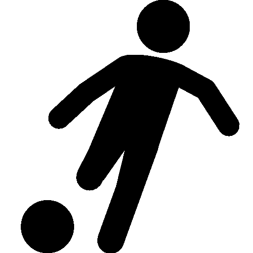
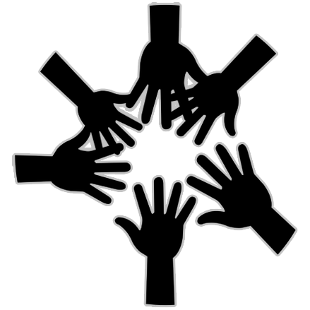

Campagne
- IFB : Road to the championship
- Interkringen
- Materiaal 2.0
- Voor het volk, door het volk
- Webteam: the force awakens
IFB: Road to the championship 
Ben je een competitief individu, dan is er binnen Wina op intellectueel vlak altijd wel een activiteit te vinden waar je jezelf volledig kan geven. Op sportief vlak is dit helaas nog niet het geval. Tot nu! Spectrum Sport introduceert: IFB: Road to the championship!
Als sportteam gaan we ons volledig geven om de Winarangen te versterken met zeer getrainde en gemotiveerde sportteams voor elke discipline, die onze kleuren zullen verdedigen in de IFB! Er zal worden gezorgd voor regelmatige en gestructureerde trainingen, opvolging van matches en een omgeving waarin teams zich volledig kunnen ontplooien. We zullen meer inzetten op teambuilding en op die manier steeds een hechte groep creëren, waarin iedereen welkom is op het speelveld en die samen als team alles kan overwinnen! Geleidelijk aan zullen we hiermee een waar fenomeen binnen Wina worden waar iedereen deel van wil uitmaken, speler of supporter. Met verantwoordelijken voor elke sport zullen we vanuit het presidium een golf van sport enthousiasme starten die menig Winees zal bereiken! Let’s go Wina!
Interkringen 
Wina, de mooiste – al mag de rest er ook wel zijn – wetenschapskring in het Leuvense. Wina houdt zich voornamelijk bezig met het organiseren van activiteiten, het vertegenwoordigen van studenten in onderwijsraden en tal van dergelijke.
Doorheen de jaren hebben leden van Spectrum gemerkt dat het héél belangrijk is om een goede naam en naamsbekendheid te hebben bij de rest van de presidia. Met Spectrum willen we onze vriendschapsbanden met de rest van de kringen zoveel mogelijk onderhouden en waar mogelijk zelfs nog verbeteren. We willen dit concreet aanpakken door ons materiaal toegankelijker te maken naar andere kringen toe en door meer activiteiten te organiseren in samenwerking met andere presidia. We hopen dat onze leden zo een nog meer gevarieerd en goedkoper aanbod krijgen aan activiteiten en eetstanden.
Materiaal 2.0 
Materiaal is jarenlang beschouwd als de post die er gewoon voor moest zorgen dat de kelder proper bleef, maar uiteraard is Materiaal veel meer dan dat. De post is voornamelijk bedoeld voor het uitlenen en het managen van, u raad het misschien al, het materiaal van Wina. Deze functie willen we volgend jaar dan ook meer in de verf zetten. Met Materiaal 2.0 willen we het uitlenen van spullen en het huren van de living gemakkelijker en toegankelijker maken, niet alleen voor Wina zelf, maar ook naar externen en andere kringen toe. Hoe gaan we dit concreet aanpakken? We willen voor eens en voor altijd een gedetailleerde inventarislijst met duidelijke huurprijs en waarborg maken, op dat iedereen eenvoudig kan raadplegen of ze bij ons het benodigde kunnen vinden. Uiteraard is de materiaalvoorraad niet statisch, we zullen ons dus ook inzetten om de lijst regelmatig te updaten. Ook het verhuren van de living zien wij anders. Samen met Webteam willen we graag een publieke kalender op de site plaatsen zodat iedereen kan zien wanneer de living vrij of bezet is. Dit is uiteraard een werk dat men moet onderhouden, maar heel de Materiaal ploeg is er klaar voor!
Voor het volk, door het volk
Een ploeg van het volk, door het volk en voor het volk zal altijd successen boeken: een wijze, enigszins verdraaide wijsheid van Abraham Lincoln die Spectrum enkel kan toejuichen. Maar wij bij Spectrum zien in deze wijze woorden meer dan dat alleen. Door het volk kan meer betekenen, namelijk leden die zelf een keer iets willen doen wat wij op dat moment niet aanbieden. Wij bij Spectrum willen onze leden dan ook ondersteunen bij hun eigen initiatieven, ondernemingen en hun eigen activiteiten. Samen met Materiaal 2.0 betekent dit het makkelijker maken van verhuren van materiaal en het reserveren van de living. We zullen echter niet enkel materiaal gemakkelijker proberen aan te bieden, maar ook kennis! Kennis over locaties, winkels, het financiële… Hier mooi bij aansluitend willen we graag de jaaractiviteiten ook een boost geven die ze allicht nodig hebben.
Webteam: the force awakens 
Vorig jaar is Wina begonnen met een meerjarenplan voor het vernieuwen van de software op de servers, hun websites, e.d. Spectrum ziet hier mogelijkheden om zijn steentje bij te dragen. Concreet willen wij werken aan het thema van de Winasite. Dit zou moderner kunnen worden gemaakt, niet enkel op het vlak van lay-out maar ook op het gebied van ondersteuning op mobiele telefoons en tablets. Het opkomend webteam ziet het als een ware uitdaging om de site toegankelijker en gebruiksvriendelijker te maken naar zijn leden toe.